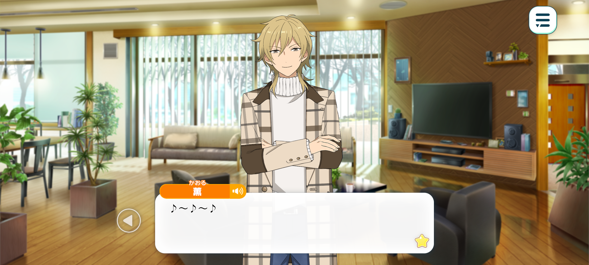
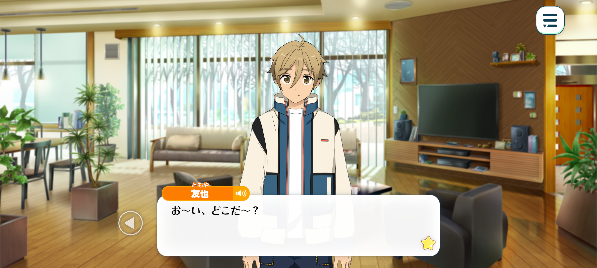
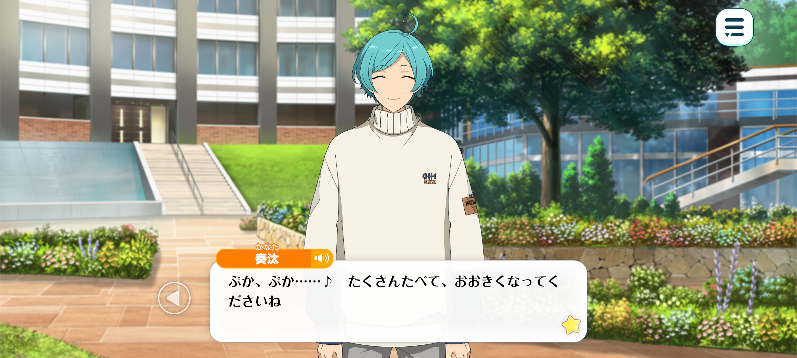

Scout! Scorpio's Venom
Capture Your Heart – Chapter 4


Time: The next day

Kaoru: ♪~♪~♪~
…Uwa. I'm humming it again.
That hero show's theme song is seriously stuck in my head. I'd better be careful I don't accidentally start singing it around other people...
...Still, that viewing party really did help me understand what makes a hero show tick. I feel like I've got a better grasp of how the stories unfold, as well as the action scenes.
But I don't know if I'll be able to put what I've learned into practice without making it obvious. Right now, I'd just end up being a poor imitation.
Besides, it's not like a drama. I can't exactly blow up buildings, and there's no way I'll be able to pull off all that wirework.
It's not even my job to worry about all this, so I really should stop getting so worked up over it. And yet, here I am...
I'm nowhere near as good as Moricchi, but I still want to make those kids smile when they see me.
...I wonder what Tomoya-kun would do in a situation like this?
I know I shouldn't keep relying on him, but... I do go to him for acting advice quite often. Maybe I'll ask him about this, too.

Tomoya: Heeey~! Where are youuu?
Kaoru: Oh? Speak of the devil...
Tomoya: Where'd you gooo? Hokuto-senpaai!
Kaoru: Oh, Tomoya-kun. Are you looking for Hidaka-kun?
Tomoya: No, I'm looking for Hokuto-senpai.
Kaoru: Huh? Hokuto as in, Hidaka Hokuto, right?
Tomoya:...
Kaoru: ...
Tomoya: ...Ah, sorry! That's the name of the penguin I'm looking after.
Kaoru: Ah, that Hokuto. You talk about Hidaka-kun so often that I thought you meant the human one~♪.
Tomoya: Sorry, I know it's a little confusing. When I first met him, he wouldn't give me the time of day unless I approached him all meek and humble, so I started calling him Hokuto-senpai.
But now, if I try calling him anything else, he just ignores me... So I guess the name stuck.
Kaoru: Ahaha, that's ridiculous.
Are you sure it's okay to keep calling him that? Though I have to admit, it's pretty funny~♪
(I was hoping to talk to Tomoya-kun, but I don't think now's the best time...)
Well, I'll help you look for Hokuto-senpai-chan! Where did you last see him?
Tomoya: Just a little while ago. I was in the kitchen preparing some food, but when I turned around, he'd disappeared.
He can't get up the stairs without my help, so he must still be somewhere on this floor. I've looked everywhere, but I can't find him...
I really wonder where he's wandered off to...
Kaoru: That's worrying. Penguins may be pretty quick underwater, but they're not exactly speedy on land. He couldn't have gotten very far in the time you weren't looking...
Unless someone kidnapped him... Hm?
...Actually, I think I might know where Hokuto-senpai-chan is. Come with me, Tomoya-kun.
Location: In the middle of the yard of the Seisoukan Dorms
Kanata: puka puka…♪ please eat lots and lots so you can grow big.
Kaoru: Hey there, Kanata-kun! You seem to be in a good mood today~.
Kanata: uhuh~. i am. but this child is in even Better mood ♪
look. mr Penguin is eating yummy looking Fishies.
Kaoru: Ahaha, he certainly is. Tomoya-kun, this is your Hokuto-senpai-chan, right?
Tomoya: It is! I'm so glad I found you~...
Were you worried, Hokuto-senpai~? There, there. Good boy.
Kaoru: Kanata-kun, you can't just go around taking other people's sea creatures without asking, you know?
Kanata: hn~? i did not take him.
i was in the Kitchen preparing some Fishies and before i realised he was right Next to me.
lookie. he is nodding his head “yes, yes.”
Kaoru: Hokuto-senpai-chan understands human speech? What a clever little penguin.
Tomoya: I was probably the person in the kitchen just before you, then. He must have wandered off when I called for him. What are you doing here, Hokuto-senpai?
Kanata: the fishies i prepare are quite Large. cutting them Up also takes a long time.
actually, i still have over Half left.
Tomoya: Uwa!? Where did you pull that fish out from?!
Kaoru: That's an arabesque greenling, isn't it~? Kanata-kun, where do you keep finding all these fish?
Kanata: ufufu. i discovered it on a walk on the Beach.
Kaoru: That's not what I meant. And you don't exactly find those swimming around here, either.
Well, never mind. You've always been a bit of an oddball, haven't you?
I'm glad that's settled, anyway. Another mystery solved...
Hm...? Actually, this might come in handy.
Tomoya: How so?
Kaoru: Well, Moricchi—— Morisawa Chiaki-kun and I are going to put on a hero show for the children at a hospital.
But I'm still trying to figure out what kind of hero I want to play. I was thinking..
Would the kids enjoy a story about a hero who rescues a lost penguin at a hospital?
Tomoya: Waa, that sounds wonderful! He's gotten pretty used to being around people thanks to everyone in Animals.
I'm sure Hokuto-senpai would be happy to help out with something like that!
Would it be alright if I came along, too? I'd like to keep an eye on him.

Kaoru: Of course! That'd be a huge help.
Fufu. Not bad, if I do say so myself~. I'll run the idea past Moricchi right away.
...Hey, Moricchi! Where are you? I wanted to talk to you about the hero show.
You're in the dorms? Then, let's meet in the common room… Yep, see you in a bit!
…
Tomoya: …? Hakaze-senpai, is something the matter?
Kaoru: I'm not sure... Maybe I'm imagining things, but...
I feel like there's something a little off about Moricchi...